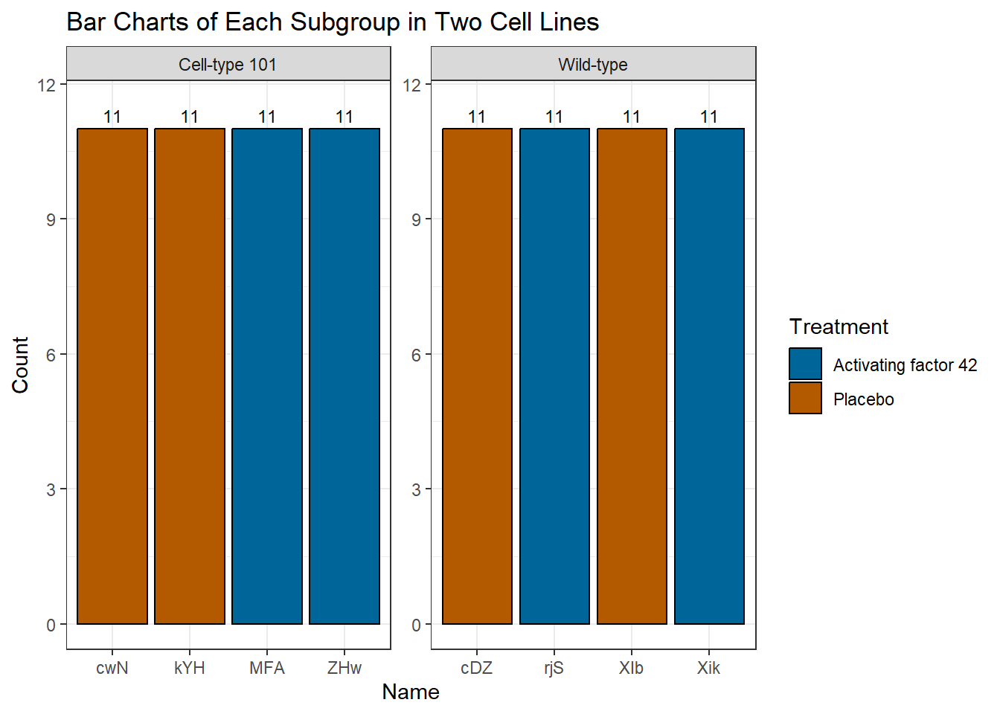
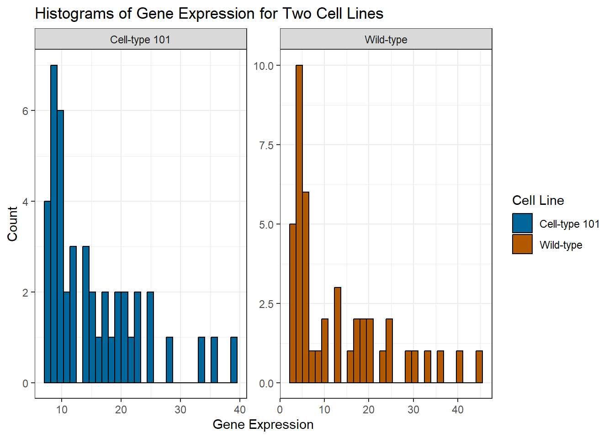
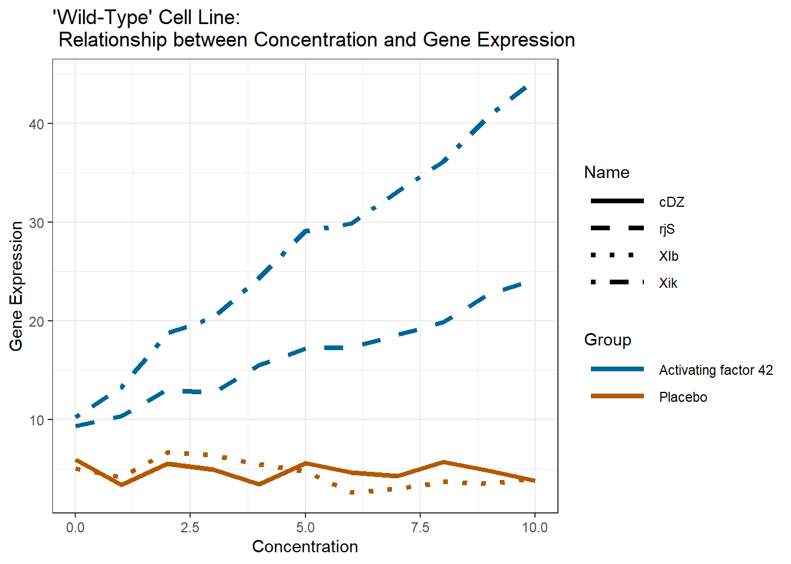
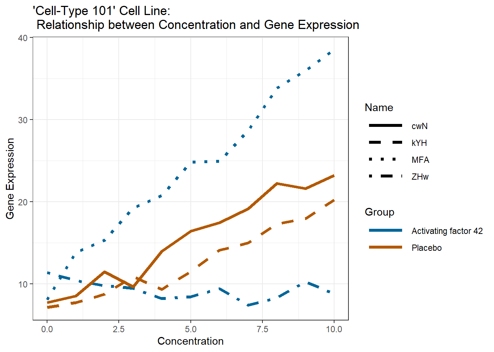
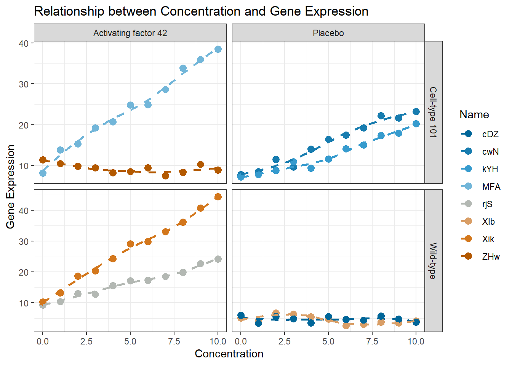
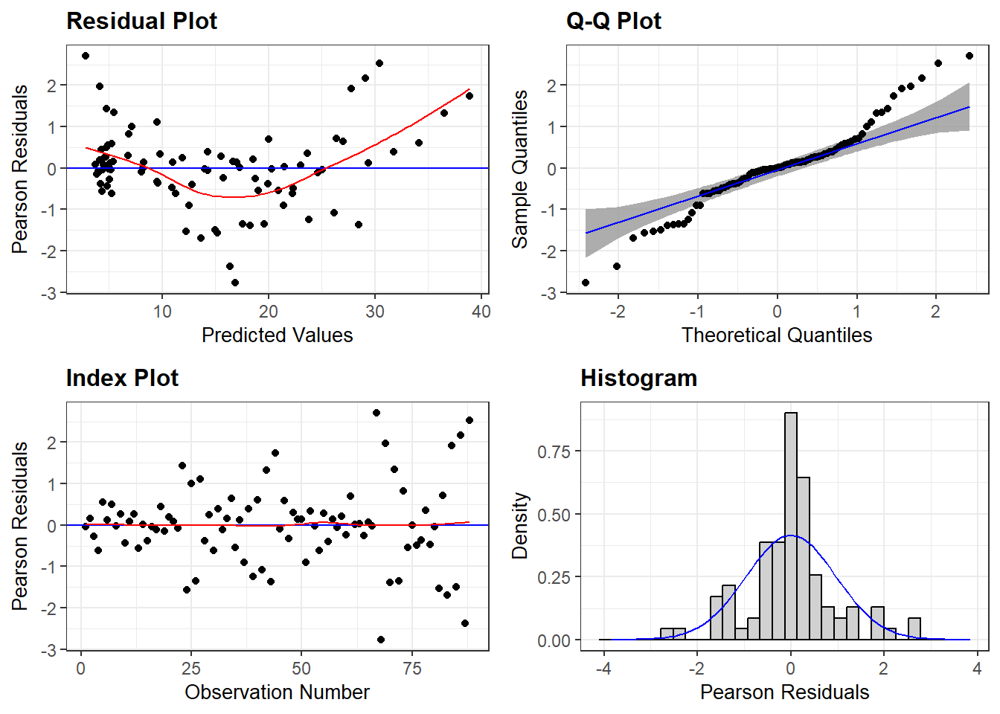
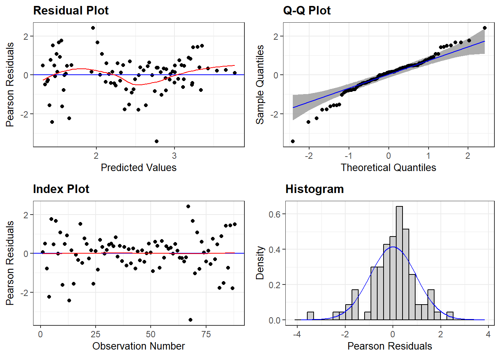
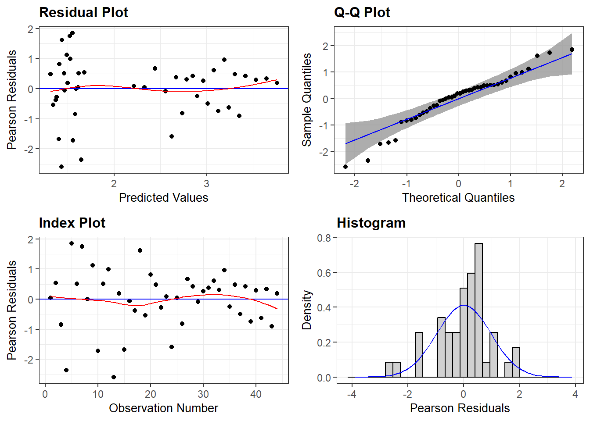
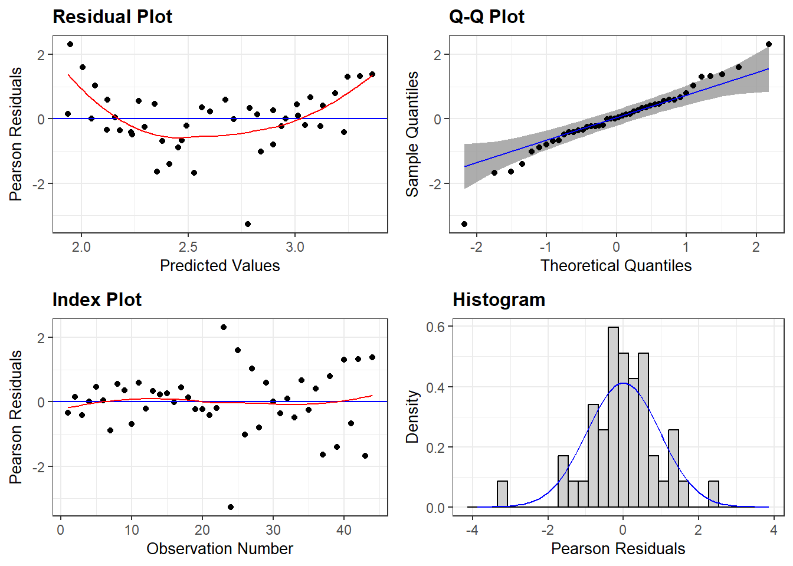

[1] "D:/download/final project/R/clean_wif_func.R"README
Abstract
This study explores the effect of treatment on the impact of growth factors on gene expression. The aim is to investigate the effect of the treatment ‘Activating factor 42’ on gene expression.
The data used in this study was provided by Dr. Karl Berator. In this data, the new treatment ‘Activating factor 42’ and a placebo saline were applied to two cell lines (‘Wild-type’ and ‘Cell-type 101’) at varying concentrations of the growth factor, and gene expression values were recorded. This study involves data cleaning, exploratory data analysis (EDA), creating presentation slides based on EDA results, calculating the sample size needed for a linear regression of gene expression, and trying different mixed-effects models. The optimal mixed-effects model is selected through comparison and transformation. Following the ANOVA results, separate mixed-model analyses are conducted for the two cell lines.
The results show a significantly different impact of ‘Activating factor 42’ on gene expression across different cell lines, which requires further exploration.
Data Cleaning
- Date: 2024-03-05
The code used for data cleaning can be found at the following path.
Due to inconsistencies in the case of data names, the names of the two cell lines and the two treatments are standardized by converting them to lowercase and then capitalizing their first letters. Additionally, the name variable is cleaned to standardize the names.
The cleaned data file can be found as follows.
# A tibble: 88 × 5
cell_line treatment name conc gene_expression
<chr> <chr> <chr> <dbl> <dbl>
1 Wild-type Placebo XIb 0 5.05
2 Wild-type Placebo cDZ 0 5.92
3 Wild-type Placebo XIb 1 4.15
4 Wild-type Placebo cDZ 1 3.34
5 Wild-type Placebo XIb 2 6.67
6 Wild-type Placebo cDZ 2 5.54
7 Wild-type Placebo XIb 3 6.35
8 Wild-type Placebo cDZ 3 4.89
9 Wild-type Placebo XIb 4 5.48
10 Wild-type Placebo cDZ 4 3.44
# ℹ 78 more rowsThe cleaned data file can also be found at the following path.
[1] "D:/download/final project/data/2024-03-05-data.xlsx"EDA
- Date: 2024-03-07
The code used for EDA can be found at the following path.
[1] "D:/download/final project/R/EDA_wif_func.R"Data Structure
By examining the cleaned data files and the various types of values contained within each character variable, we can understand the structure of the entire experimental data.
The data consists of four variables: ‘cell_line’, ‘treatment’, ‘name’, ‘conc’, and ‘gene_expression’.
‘cell_line’: Two types of cell lines, referred to as ‘Cell-type 101’ and ‘Wild-type’.
‘treatment’: Two groups, designated as the ‘Activating factor 42’ group and the placebo group.
‘name’: Each activation factor group or placebo group contains two subgroups represented by different names.
‘conc’: Represents the concentration of growth factors, with concentrations ranging from 0 to 10 in increments of 1 for each subgroup.
‘gene_expression’: The values of gene expression as the concentration varies within each subgroup.
$cell_line
[1] "Wild-type" "Cell-type 101"
$treatment
[1] "Placebo" "Activating factor 42"
$name
[1] "XIb" "cDZ" "rjS" "Xik" "cwN" "kYH" "ZHw" "MFA"Data Summary
Look at the summary of the data frame.
As mentioned earlier, the data consists of 5 variables, with ‘cell_line’, ‘treatment’, and ‘name’ being character variables, while ‘conc’ and ‘gene_expression’ are numeric variables.
For the numeric variables, the mean gene expression value is 14.31, with a standard deviation of 9.76. The minimum gene expression value is 2.58, with a maximum of 44.44.
| Name | wif |
| Number of rows | 88 |
| Number of columns | 5 |
| _______________________ | |
| Column type frequency: | |
| character | 3 |
| numeric | 2 |
| ________________________ | |
| Group variables | None |
Variable type: character
| skim_variable | n_missing | complete_rate | min | max | empty | n_unique | whitespace |
|---|---|---|---|---|---|---|---|
| cell_line | 0 | 1 | 9 | 13 | 0 | 2 | 0 |
| treatment | 0 | 1 | 7 | 20 | 0 | 2 | 0 |
| name | 0 | 1 | 3 | 3 | 0 | 8 | 0 |
Variable type: numeric
| skim_variable | n_missing | complete_rate | mean | sd | p0 | p25 | p50 | p75 | p100 | hist |
|---|---|---|---|---|---|---|---|---|---|---|
| conc | 0 | 1 | 5.00 | 3.18 | 0.00 | 2.00 | 5.00 | 8.0 | 10.00 | ▇▅▅▅▅ |
| gene_expression | 0 | 1 | 14.31 | 9.76 | 2.58 | 7.03 | 11.14 | 19.4 | 44.44 | ▇▃▂▁▁ |
Data Subset Example
By selecting a subset of the total data, we can gain a more direct understanding of the data.
The table below displays the data for the subgroup named ‘rjS’ within the ‘Activating factor 42’ group in the ‘Wild-type’ cell line.
The concentration of growth factors varies from 0 to 10 in increments of 1, corresponding to gene expression values ranging from 9.32 to 24.17.
| Overview of Data for 'rjS' | ||||
|---|---|---|---|---|
| Cell Line | Treatment | Name | Concentration | Gene Expression |
| Wild-type | Activating factor 42 | rjS | 0 | 9.32 |
| Wild-type | Activating factor 42 | rjS | 1 | 10.35 |
| Wild-type | Activating factor 42 | rjS | 2 | 13.04 |
| Wild-type | Activating factor 42 | rjS | 3 | 12.68 |
| Wild-type | Activating factor 42 | rjS | 4 | 15.53 |
| Wild-type | Activating factor 42 | rjS | 5 | 17.17 |
| Wild-type | Activating factor 42 | rjS | 6 | 17.31 |
| Wild-type | Activating factor 42 | rjS | 7 | 18.54 |
| Wild-type | Activating factor 42 | rjS | 8 | 19.84 |
| Wild-type | Activating factor 42 | rjS | 9 | 22.74 |
| Wild-type | Activating factor 42 | rjS | 10 | 24.17 |
Bar Charts
Look at the bar charts of the subgroups for two different types of cell line.
For each subgroup, the concentration of growth factors varies from 0 to 10 in increments of 1, resulting in 11 observations per subgroup.
With a total of 8 subgroups, there are 88 observations in total.

Histograms
Regarding the values of gene expression, histograms provide the most intuitive observation.
From the histograms, the distribution of gene expression is unimodal and right-skewed.

Relationship Plots
Relationship for Two Types of Cell Lines
These two plots illustrate the relationship between concentration and gene expression for the ‘Cell-type 101’ and ‘Wild-type’ cell lines, respectively.


Relationship Across Different Treatments and Cell Lines
This plot illustrates the trend of gene expression values varying with the concentration of growth factor.

Relationship Plots for conference
- Date: 2024-04-04
The code used for plotting the relationship plots for the conference can be found at the following path.
[1] "D:/download/final project/R/conference_wif_func.R"The TIFF file for the conference with Times New Roman font (9in x 6in) and a resolution of 500 can be found at the following path. The content shows the relationship between concentration and gene expression for the ‘Cell-type 101’ and ‘Wild-type’ cell lines, respectively.
[1] "D:/download/final project/figs/conference_plot.tiff"Sample Size Calculation
- Date: 2024-05-20
The code used for sample size calculation can be found at the following path.
[1] "D:/download/final project/R/sample_size_wif_func.R"We are going to do a linear regression of gene expression with the predictors concentration, cell age, treatment (two levels), cell type (two levels), and media (two levels). We have done a previous study and got an \(R^2\) of 0.1 between the predictors and the response level. We want a power of 90% and a significance level of 0.05.
We obtained a rounded sample size of 154.
[1] 154Model Fitting
- Date: 2024-05-30
The code used for model fitting can be found at the following path.
[1] "D:/download/final project/R/model_wif_func.R"Because of the complexity of the data and the need to account for both fixed and random effects, linear mixed-effects models are employed to estimate fixed effects (i.e., cell_line, treatment, conc) and their interactions on the dependent variable (i.e., gene_expression), while statistically controlling for the random effects of names (random intercept, 1 | name) on the dependent variable. Multiple models are run and the likelihood-ratio test is used to select the optimal combination of fixed effects fitted with maximum likelihood, while keeping the random effects structure the same.
$m1
gene_expression ~ treatment + conc + (1 | name)
<environment: 0x000002e5a38039c0>$m2
gene_expression ~ cell_line + treatment + conc + (1 | name)
<environment: 0x000002e5a6557490>$m3
gene_expression ~ cell_line + treatment * conc + (1 | name)
<environment: 0x000002e58d3ba508>$m4
gene_expression ~ cell_line * treatment * conc + (1 | name)
<environment: 0x000002e5a0d39ce0>The results show that including an interaction term between treatment and concentration \((p < 0.001)\), and including interaction terms between cell line and treatment, between cell line and concentration, and an interaction term between cell line, treatment and concentration \((p < 0.001)\), significantly improve the fit of the model. Hence, the preferred model would be Model 4 with an three-way interaction term between cell line, treatment and concentration.
$anova_comparison
Data: wif
Models:
m1: gene_expression ~ treatment + conc + (1 | name)
m2: gene_expression ~ cell_line + treatment + conc + (1 | name)
m3: gene_expression ~ cell_line + treatment * conc + (1 | name)
m4: gene_expression ~ cell_line * treatment * conc + (1 | name)
npar AIC BIC logLik deviance Chisq Df Pr(>Chisq)
m1 5 543.36 555.74 -266.68 533.36
m2 6 545.09 559.96 -266.55 533.09 0.2663 1 0.6058
m3 7 528.91 546.26 -257.46 514.91 18.1781 1 2.012e-05 ***
m4 10 498.12 522.90 -239.06 478.12 36.7908 3 5.095e-08 ***
---
Signif. codes: 0 '***' 0.001 '**' 0.01 '*' 0.05 '.' 0.1 ' ' 1Then, use diagnostic plots to assess whether the model is appropriate. The residual plot shows a quadratic pattern.
$m4_panel
Hence, the response variable is transformed using logarithmic transformation.
$m4_log
log(gene_expression) ~ cell_line * treatment * conc + (1 | name)
<environment: 0x000002e5a5b2f2b0>After transforming the response variable, the diagnostic plots are better. The residuals appear randomly scattered around zero without any clear patterns, suggesting that the model adequately captures the underlying structure of the data. Additionally, the Q-Q plot with bands shows that the residuals are approximately normally distributed, further confirming the appropriateness of the model.
$m4_log_panel
Based on the ANOVA results, the three-way interaction term that includes the cell line is significant.
$anova_m4_log
Type III Analysis of Variance Table with Satterthwaite's method
Sum Sq Mean Sq NumDF DenDF F value Pr(>F)
cell_line 0.0297 0.0297 1 10.421 0.7515 0.405517
treatment 0.3384 0.3384 1 10.421 8.5635 0.014527 *
conc 3.5264 3.5264 1 80.000 89.2352 1.168e-14 ***
cell_line:treatment 0.0527 0.0527 1 10.421 1.3334 0.273994
cell_line:conc 0.4009 0.4009 1 80.000 10.1459 0.002062 **
treatment:conc 0.4529 0.4529 1 80.000 11.4610 0.001104 **
cell_line:treatment:conc 2.1259 2.1259 1 80.000 53.7953 1.604e-10 ***
---
Signif. codes: 0 '***' 0.001 '**' 0.01 '*' 0.05 '.' 0.1 ' ' 1Since this study focuses on the effect of treatment on the effect of growth factor (reflected as concentration) on gene expression, and due to the significant three-way interaction, follow-up analyses will be separately applied to the ‘Wild-type’ cell line and the ‘Cell-type 101’ cell line.
$m_wild
log(gene_expression) ~ treatment * conc + (1 | name)
<environment: 0x000002e59ea628d8>$m_cell
log(gene_expression) ~ treatment * conc + (1 | name)
<environment: 0x000002e5a154e6d8>For the model for the ‘Wild-type’ cell line, the residuals appear randomly scattered around zero without any clear patterns, suggesting that the model adequately captures the underlying structure of the data. Additionally, the Q-Q plot with bands shows that the residuals are approximately normally distributed, further confirming the appropriateness of the model.
$m_wild_panel
For the model for the ‘Cell-type 101’ cell line, the residuals exhibit a slight quadratic trend, indicating a potential nonlinearity that the current model does not fully capture. This suggests that while the model explains a significant portion of the variance, there may be room for improvement.
$m_cell_panel
Based on the ANOVA results, for the ‘Wild-type’ cell line, each term is significant; for the ‘Cell-type 101’ cell line, both the concentration and the interaction between concentration and treatment are significant.
$anova_m_wild
Type III Analysis of Variance Table with Satterthwaite's method
Sum Sq Mean Sq NumDF DenDF F value Pr(>F)
treatment 0.59789 0.59789 1 6.63 17.085 0.004934 **
conc 0.77459 0.77459 1 40.00 22.134 3.019e-05 ***
treatment:conc 2.27063 2.27063 1 40.00 64.884 6.657e-10 ***
---
Signif. codes: 0 '***' 0.001 '**' 0.01 '*' 0.05 '.' 0.1 ' ' 1$anova_m_cell
Type III Analysis of Variance Table with Satterthwaite's method
Sum Sq Mean Sq NumDF DenDF F value Pr(>F)
treatment 0.04569 0.04569 1 4.845 1.0375 0.35654
conc 3.15272 3.15272 1 40.000 71.5871 1.896e-10 ***
treatment:conc 0.30815 0.30815 1 40.000 6.9970 0.01161 *
---
Signif. codes: 0 '***' 0.001 '**' 0.01 '*' 0.05 '.' 0.1 ' ' 1The summary results for the model for ‘Wild-type’ cell line are presented below. The interaction term indicates that for the ‘Activating factor 42’ treatment, each unit increase in concentration increases the log-transformed gene expression by 0.144 \(\mu g/ml\) more compared to treatment placebo \((p < 0.001)\).
| Model Summary of Follow-up Analysis Model for 'Wild-type' Cell Line | |||||
|---|---|---|---|---|---|
| Term | Estimate | Std. Error | df | t value | Pr(>|t|) |
| (Intercept) | 2.418 | 0.132 | 6.630 | 18.255 | <0.001 |
| treatmentPlacebo | −0.774 | 0.187 | 6.630 | −4.133 | <0.01 |
| conc | 0.114 | 0.013 | 40.000 | 9.023 | <0.001 |
| treatmentPlacebo:conc | −0.144 | 0.018 | 40.000 | −8.055 | <0.001 |
The summary results for the model for ‘Cell-type 101’ cell line are presented below. The interaction term indicates that for the ‘Activating factor 42’ treatment, each unit increase in concentration decreases the log-transformed gene expression by 0.053 \(\mu g/ml\) more compared to treatment placebo \((p < 0.05)\).
| Model Summary of Follow-up Analysis Model for 'Cell-type 101' Cell Line | |||||
|---|---|---|---|---|---|
| Term | Estimate | Std. Error | df | t value | Pr(>|t|) |
| (Intercept) | 2.364 | 0.233 | 4.845 | 10.129 | <0.001 |
| treatmentPlacebo | −0.336 | 0.330 | 4.845 | −1.019 | 0.357 |
| conc | 0.058 | 0.014 | 40.000 | 4.112 | <0.001 |
| treatmentPlacebo:conc | 0.053 | 0.020 | 40.000 | 2.645 | <0.05 |
Summary
- Date: 2024-05-31
This study explores the effect of treatment on the impact of the growth factor on gene expression, specifically focusing on the treatment ‘Activating factor 42’. The results for the ‘Wild-type’ cell line indicate a significant increase of gene expression with increasing concentration. In contrast, the results for the ‘Cell-type 101’ cell line indicate a slight decrease of gene expression with increasing concentration. These findings highlight the differential significant impact of ‘Activating factor 42’ on gene expression across different cell lines, which needs further exploration.
Contact
Xiaoyi Wang
Email: a1871801@adelaide.edu.au
Phone: +61 434 043 882
Supplementary Materials
The presentation slides introducing the data based on EDA results can be found at the following path.
here::here("slides/2024-03-20-slides.pptx")[1] "D:/download/final project/slides/2024-03-20-slides.pptx"The explanation of the sample size calculation for the linear regression model can be found at the following path.
here::here("reports/2024-05-22-sample-size-report.pdf")[1] "D:/download/final project/reports/2024-05-22-sample-size-report.pdf"The report showing the model results, following the usual IMRaD format, can be found at the following path.
here::here("reports/2024-05-24-IMRaD-report.html")[1] "D:/download/final project/reports/2024-05-24-IMRaD-report.html"